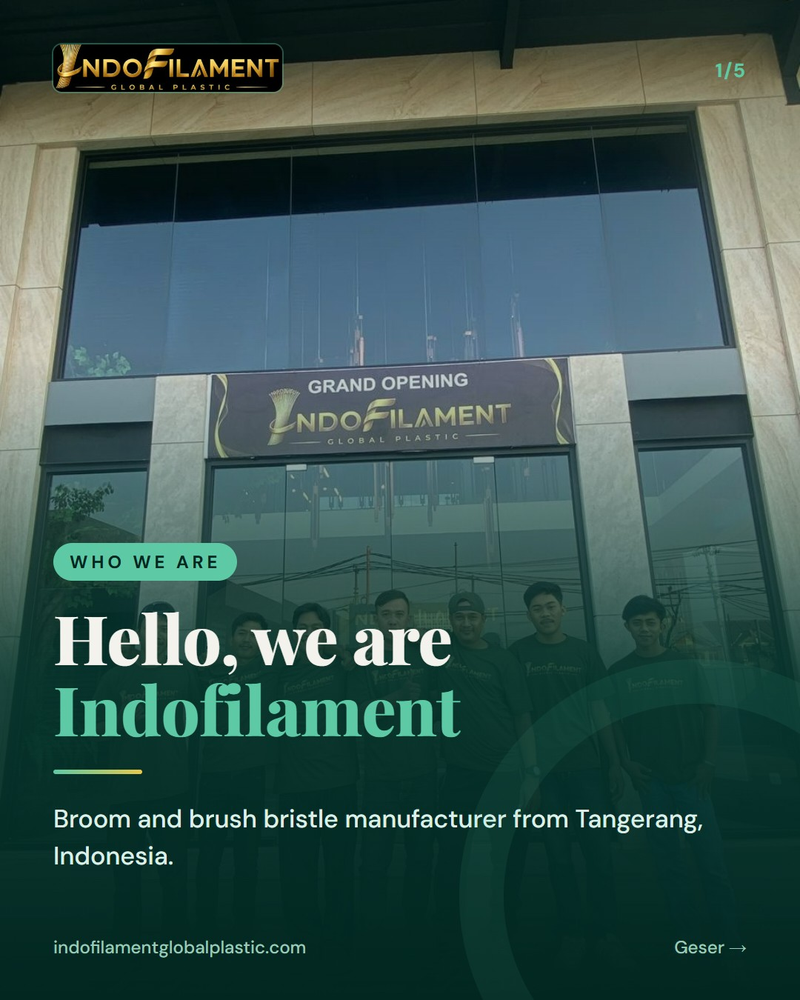
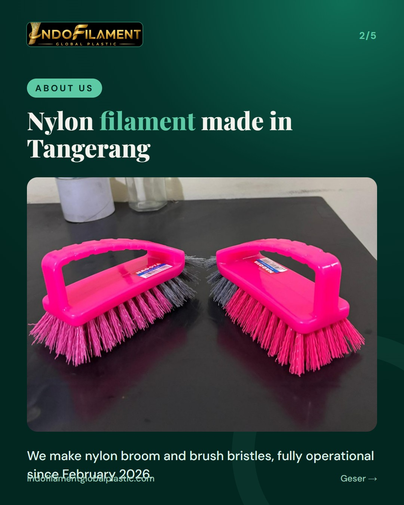
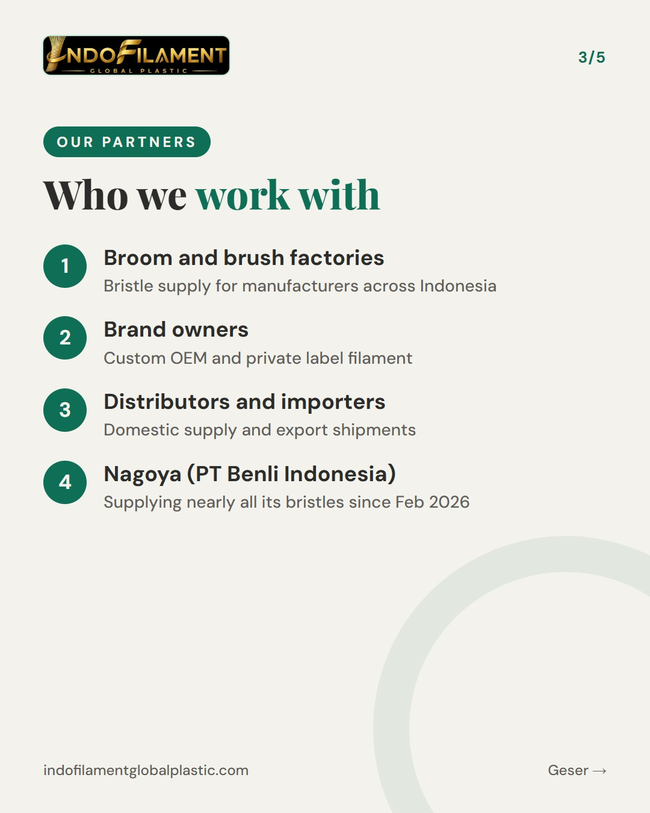
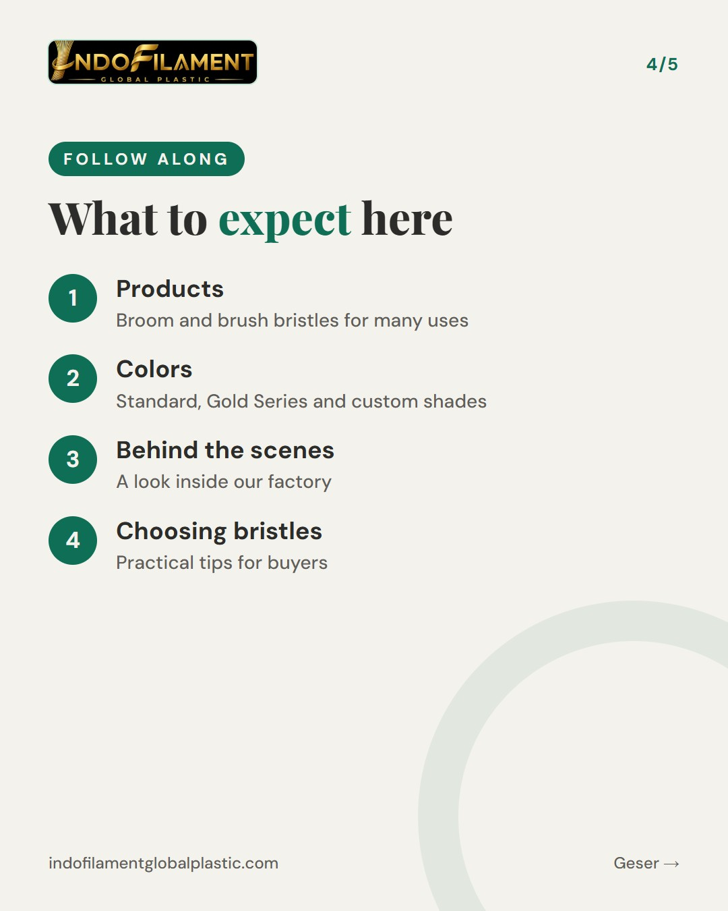
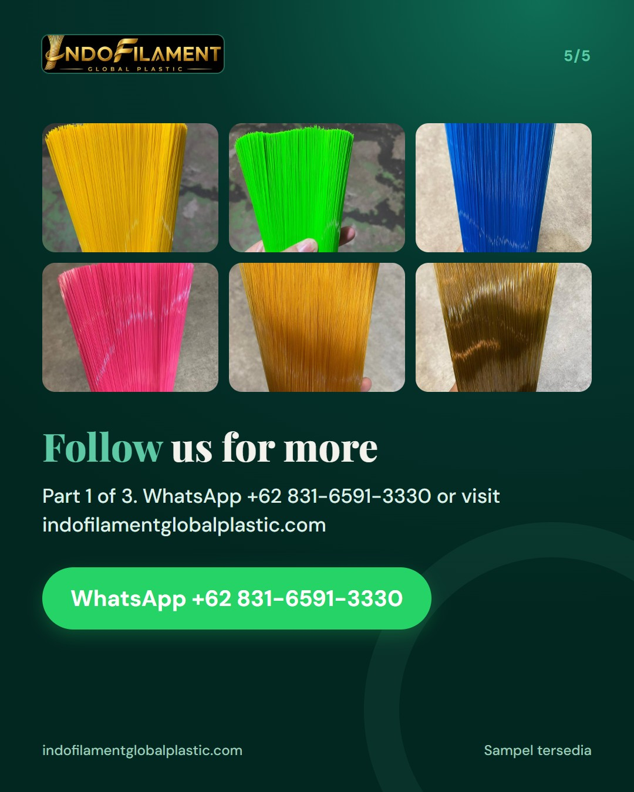

WRITE EVERYTHING IN FULL ENGLISH (all slide text and the whole caption, no Indonesian at all; English hashtags only). Audience: international and local B2B buyers. INTRO SERIES 1 of 3 - WHO WE ARE. Cover kicker: Who We Are. Content: a warm hello as the first post of this account; we are Indofilament (PT Indofilament Global Plastic), a broom and brush bristle (nylon filament) manufacturer from Tangerang, Indonesia, serving broom and brush factories and brands in Indonesia and export buyers; who we work with; what to expect on this account (products, colors, behind the scenes at the factory, tips for choosing bristles). Caption: part 1 of our introduction series, invite people to follow.





Hello, and welcome to our very first post! 👋 We are Indofilament (PT Indofilament Global Plastic), a broom and brush bristle manufacturer based in Tangerang, Indonesia. We make nylon filament for broom and brush factories, brand owners, distributors and importers, both in Indonesia and overseas. Our factory has been fully operational since February 2026, using modern filament machines and recycled plastic raw materials. We also supply custom OEM and private label filament, and we are proud to supply nearly all the broom and brush bristles for Nagoya, a brand of PT Benli Indonesia. Here is what you can expect from this account: our products, our colors, behind-the-scenes moments at the factory, and practical tips for choosing the right bristles for your brooms and brushes. This is Part 1 of our 3-part introduction series. Follow us so you don't miss the next parts! 🙌 Request a sample via WhatsApp +62 831-6591-3330 or send us a DM. For export buyers: we are a nylon broom and brush filament manufacturer from Indonesia, offering custom colors and sizes. Message us to request samples or to arrange a factory visit. #bulusapu #bulusikat #broomfilament #brushfilament #nylonfilament #broomfactory #brushmanufacturer #privatelabel #OEMmanufacturer #madeinindonesia #b2bsupplier #indofilament